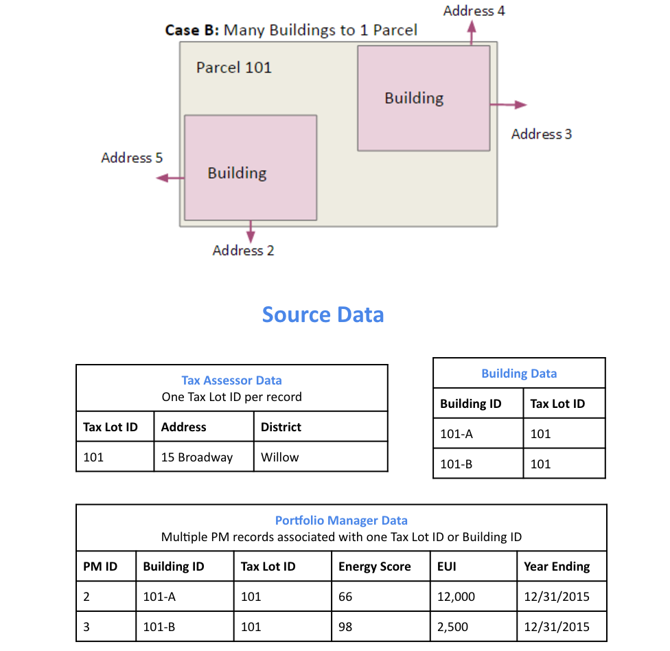
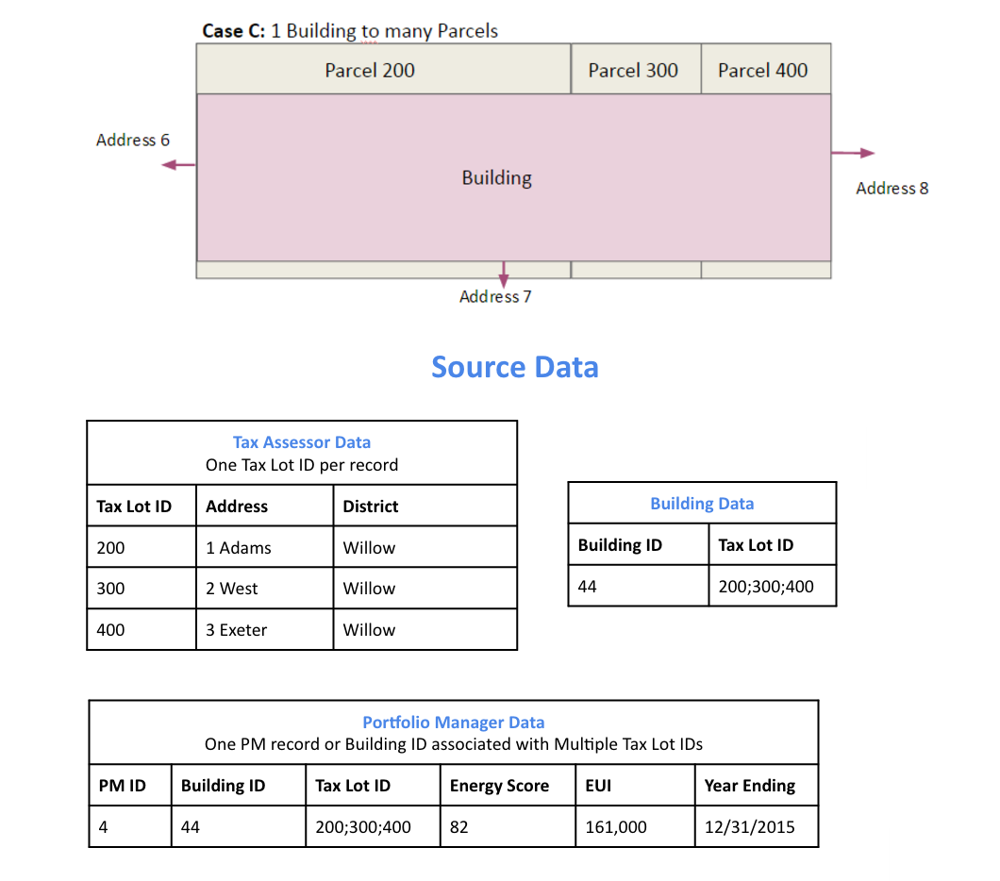
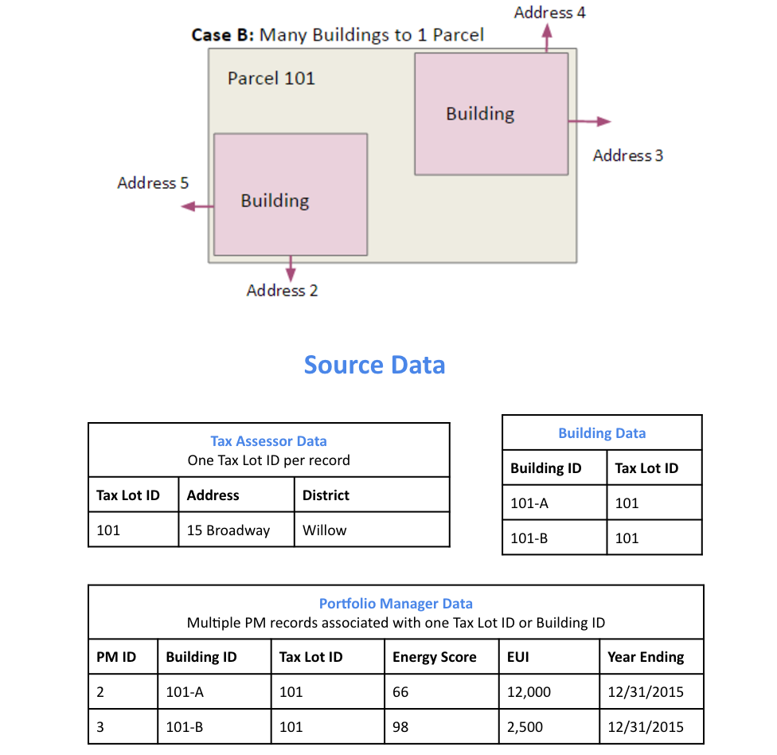
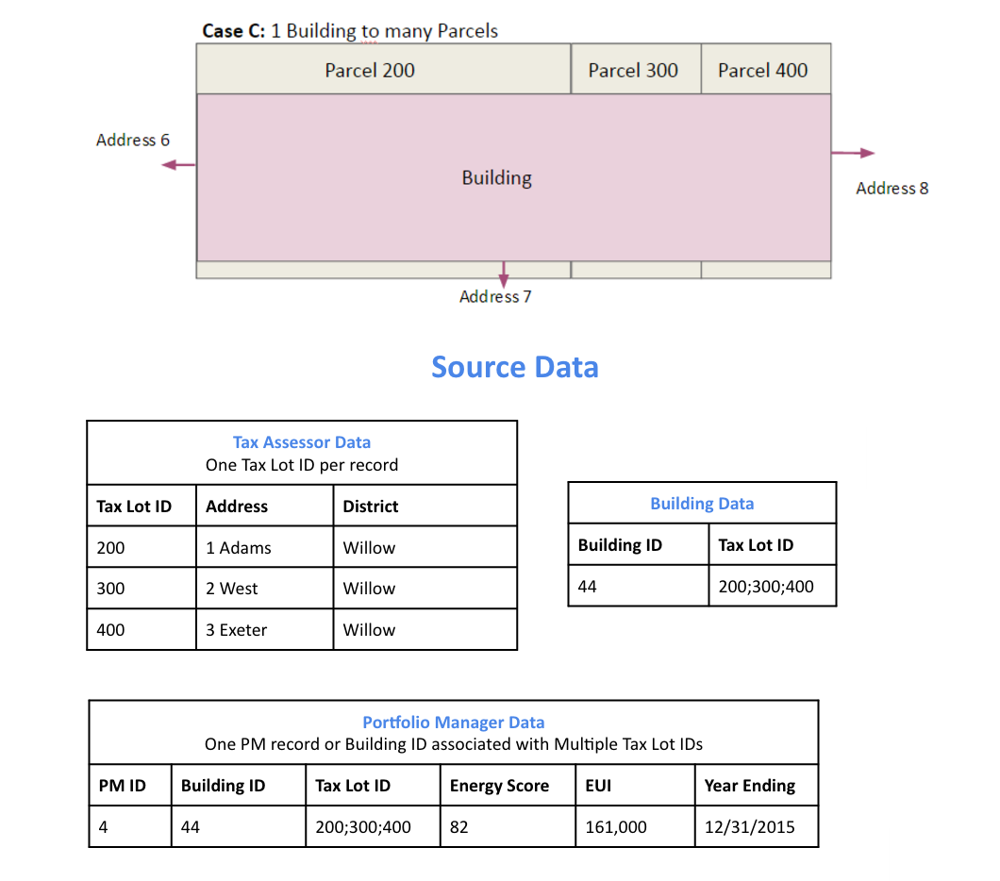
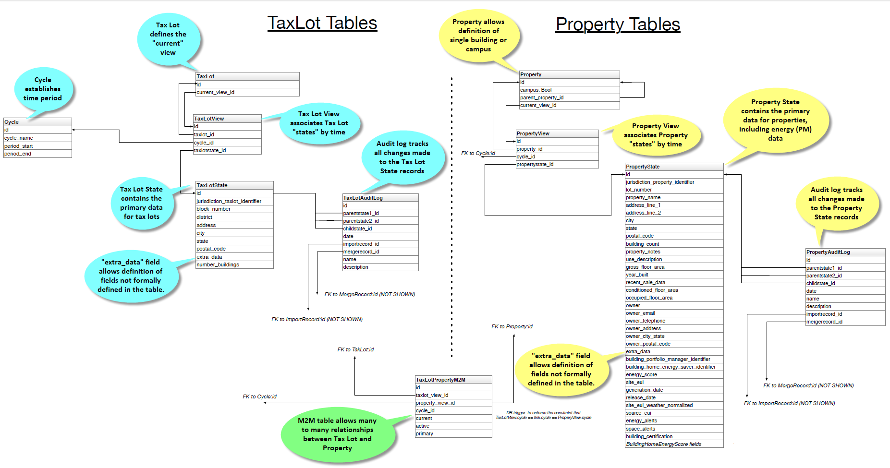
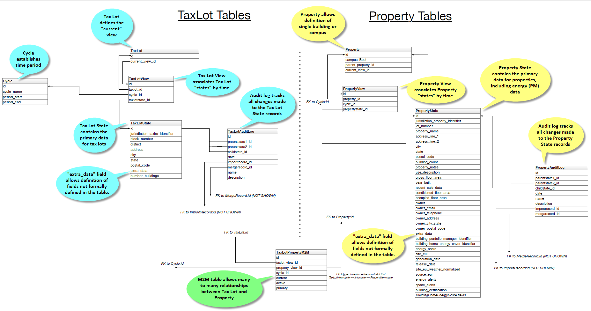

Standard Energy Efficiency Data (SEED) Platform¶
The Standard Energy Efficiency Data (SEED) Platform™ is a web-based application that helps organizations easily manage data on the energy performance of large groups of buildings. Users can combine data from multiple sources, clean and validate it, and share the information with others. The software application provides an easy, flexible, and cost-effective method to improve the quality and availability of data to help demonstrate the economic and environmental benefits of energy efficiency, to implement programs, and to target investment activity.
The SEED application is written in Python/Django, with AngularJS, Bootstrap, and other JavaScript libraries used for the front-end. The back-end database is required to be PostgreSQL.
The SEED web application provides both a browser-based interface for users to upload and manage their building data, as well as a full set of APIs that app developers can use to access these same data management functions.
Work on SEED Platform is managed by the National Renewable Energy Laboratory, with funding from the U.S. Department of Energy.
Getting Started¶
Development Setup¶
Installation on OSX¶
These instructions are for installing and running SEED on Mac OSX in development mode.
Quick Installation Instructions¶
This section is intended for developers who may already have their machine ready for general development. If this is not the case, skip to Prerequisites. Note that SEED uses python 3.
install Postgres 11.1 and redis for cache and message broker
install PostGIS 2.5 and enable it on the database using CREATE EXTENSION postgis;
use a virtualenv (if desired)
git clone git@github.com:seed-platform/seed.git
create a local_untracked.py in the config/settings folder and add CACHE and DB config (example local_untracked.py.dist)
to enable geocoding, get MapQuest API key and attach it to your organization
export DJANGO_SETTINGS_MODULE=config.settings.dev in all terminals used by SEED (celery terminal and runserver terminal)
- pip install -r requirements/local.txt
for condas python, you way need to run this command to get pip install to succeed: conda install -c conda-forge python-crfsuite
bin/install_javascript_dependencies.sh
./manage.py migrate
./manage.py create_default_user
./manage.py runserver
DJANGO_SETTINGS_MODULE=config.settings.dev celery -A seed worker -l info -c 4 –maxtasksperchild=1000 –events
navigate to http://127.0.0.1:8000/app/#/profile/admin in your browser to add users to organizations
main app runs at 127.0.0.1:8000/app
The python manage.py create_default_user will setup a default superuser which must be used to access the system the first time. The management command can also create other superusers.
./manage.py create_default_user --username=demo@seed.lbl.gov --organization=lbl --password=demo123
Prerequisites¶
These instructions assume you have MacPorts or Homebrew. Your system should have the following dependencies already installed:
git (port install git or brew install git)
graphviz (brew install graphviz)
pyenv (Recommended)
Note
Although you could install Python packages globally, this is the easiest way to install Python packages. Setting these up first will help avoid polluting your base Python installation and make it much easier to switch between different versions of the code.
brew install pyenv pyenv install <python3 version you want> pyenv virtualenv <python3 version you want> seed pyenv local seed
PostgreSQL 11.1¶
MacPorts:
sudo su - root
port install postgresql94-server postgresql94 postgresql94-doc
# init db
mkdir -p /opt/local/var/db/postgresql94/defaultdb
chown postgres:postgres /opt/local/var/db/postgresql94/defaultdb
su postgres -c '/opt/local/lib/postgresql94/bin/initdb -D /opt/local/var/db/postgresql94/defaultdb'
# At this point, you may want to add start/stop scripts or aliases to
# ~/.bashrc or your virtualenv ``postactivate`` script
# (in ``~/.virtualenvs/{env-name}/bin/postactivate``).
alias pg_start='sudo su postgres -c "/opt/local/lib/postgresql94/bin/pg_ctl \
-D /opt/local/var/db/postgresql94/defaultdb \
-l /opt/local/var/db/postgresql94/defaultdb/postgresql.log start"'
alias pg_stop='sudo su postgres -c "/opt/local/lib/postgresql94/bin/pg_ctl \
-D /opt/local/var/db/postgresql94/defaultdb stop"'
pg_start
sudo su - postgres
PATH=$PATH:/opt/local/lib/postgresql94/bin/
Homebrew:
brew install postgres
# follow the post install instructions to add to launchagents or call
# manually with `postgres -D /usr/local/var/postgres`
# Skip the remaining Postgres instructions!
Configure PostgreSQL. Replace ‘seeddb’, ‘seeduser’ with desired db/user. By default use password seedpass when prompted. Use the code block below in development only since the seeduser is a SUPERUSER.
createuser -P seeduser
createdb `whoami`
psql -c 'CREATE DATABASE "seeddb" WITH OWNER = "seeduser";'
psql -c 'GRANT ALL PRIVILEGES ON DATABASE "seeddb" TO seeduser;'
psql -c 'ALTER ROLE seeduser SUPERUSER;
PostGIS 2.5¶
MacPorts:
# Assuming you're still root from installing PostgreSQL,
port install postgis2
Homebrew:
brew install postgis
Configure PostGIS:
psql -d seeddb -c "CREATE EXTENSION postgis;"
# For testing, give seed user superuser access:
# psql -c 'ALTER USER seeduser CREATEDB;'
If upgrading from an existing database or existing local_untracked.py file, make sure to add the MapQuest API Key and set the database engine to ‘ENGINE’: ‘django.contrib.gis.db.backends.postgis’.
Now exit any root environments, becoming just yourself (even though it’s not that easy being green), for the remainder of these instructions.
Python Packages¶
Run these commands as your normal user id.
Change to a virtualenv (using virtualenvwrapper) or do the following as a superuser. A virtualenv is usually better for development. Set the virtualenv to seed.
workon seed
Make sure PostgreSQL command line scripts are in your PATH (if using MacPorts)
export PATH=$PATH:/opt/local/lib/postgresql94/bin
Some packages (uWSGI) may need to find your C compiler. Make sure you have ‘gcc’ on your system, and then also export this to the CC environment variable:
export CC=gcc
Install requirements with pip
pip install -r requirements/local.txt
NodeJS/npm¶
Install npm. You can do this by installing from nodejs.org, MacPorts, or Homebrew:
MacPorts:
sudo port install npm
Homebrew:
brew install npm
Configure Django and Databases¶
In the config/settings directory, there must be a file called local_untracked.py that sets up databases and a number of other things. To create and edit this file, start by copying over the template
cd config/settings
cp local_untracked.py.dist local_untracked.py
Edit local_untracked.py. Open the file you created in your favorite editor. The PostgreSQL config section will look something like this:
# postgres DB config
DATABASES = {
'default': {
'ENGINE': 'django.contrib.gis.db.backends.postgis',
'NAME': 'seeddb',
'USER': 'seeduser',
'PASSWORD': 'seedpass',
'HOST': 'localhost',
'PORT': '5432',
}
}
You may want to comment out the AWS settings.
For Redis, edit the CACHES and CELERY_BROKER_URL values to look like this:
CACHES = {
'default': {
'BACKEND': 'redis_cache.cache.RedisCache',
'LOCATION': "127.0.0.1:6379",
'OPTIONS': {'DB': 1},
'TIMEOUT': 300
}
}
CELERY_BROKER_URL = 'redis://127.0.0.1:6379/1'
MapQuest API Key¶
Register for a MapQuest API key: https://developer.mapquest.com/plan_purchase/steps/business_edition/business_edition_free/register
Visit the Manage Keys page: https://developer.mapquest.com/user/me/apps Either create a new key or use the key initially provided. Copy the “Consumer Key” into the target organizations MapQuest API Key field under the organization’s settings page or directly within the DB.
Run Django Migrations¶
Change back to the root of the repository. Now run the migration script to set up the database tables
export DJANGO_SETTINGS_MODULE=config.settings.dev
./manage.py migrate
Django Admin User¶
You need a Django admin (super) user.
./manage.py create_default_user --username=admin@my.org --organization=seedorg --password=badpass
Of course, you need to save this user/password somewhere, since this is what you will use to login to the SEED website.
If you want to do any API testing (and of course you do!), you will need to add an API KEY for this user. You can do this in postgresql directly:
psql seeddb seeduser
seeddb=> update landing_seeduser set api_key='DEADBEEF' where id=1;
The ‘secret’ key DEADBEEF is hard-coded into the test scripts.
Install Redis¶
You need to manually install Redis for Celery to work.
MacPorts:
sudo port install redis
Homebrew:
brew install redis
# follow the post install instructions to add to launchagents or
# call manually with `redis-server`
Install JavaScript Dependencies¶
The JS dependencies are installed using node.js package management (npm).
npm install
Start the Server¶
You should put the following statement in ~/.bashrc or add it to the virtualenv post-activation script (e.g., in ~/.virtualenvs/seed/bin/postactivate).
export DJANGO_SETTINGS_MODULE=config.settings.dev
The combination of Redis, Celery, and Django have been encapsulated in a single shell script, which examines existing processes and does not start duplicate instances:
./bin/start-seed.sh
When this script is done, the Django stand-alone server will be running in the foreground.
Login¶
Open your browser and navigate to http://127.0.0.1:8000
Login with the user/password you created before, e.g., admin@my.org and badpass.
Note
these steps have been combined into a script called start-seed.sh. The script will also not start Celery or Redis if they already seem to be running.
Installation using Docker¶
Docker works natively on Linux, Mac OSX, and Windows 10. If you are using an older version of Windows (and some older versions of Mac OSX), you will need to install Docker Toolbox.
Choose either Docker Native (Windows/OSX) or Docker Native (Ubuntu) to install Docker.
Docker Native (Ubuntu)¶
Follow instructions [here](https://docs.docker.com/engine/installation/linux/docker-ce/ubuntu/).
[Install Docker Compose](https://docs.docker.com/compose/install/)
Docker Native (Windows/OSX)¶
Following instructions (for Mac)[https://docs.docker.com/docker-for-mac/install/] or (for Windows)[https://docs.docker.com/docker-for-windows/install/].
[Install Docker Compose](https://docs.docker.com/compose/install/)
Building and Configuring Containers¶
Run Docker Compose
docker-compose build
Be Patient … If the containers build successfully, then start the containers
docker-compose up
Note that you may need to build the containers a couple times for everything to converge
Login to container
The docker-compose file creates a default user and password. Below are the defaults but can be overridden by setting environment variables.
username: user@seed-platform.org password: super-secret-password
Note
Don’t forget that you need to reset your default username and password if you are going to use these Docker images in production mode!
Deployment Guide¶
SEED is intended to be installed on Linux instances in the cloud (e.g. AWS), and on local hardware. SEED Platform does not officially support Windows for production deployment. If this is desired, see the Django notes.
AWS Setup¶
Amazon Web Services (AWS) provides the preferred hosting for the SEED Platform.
seed is a Django Project and Django’s documentation is an excellent place for general understanding of this project’s layout.
Prerequisites¶
Ubuntu server 14.04 or newer.
sudo apt-get update
sudo apt-get upgrade
sudo apt-get install -y libpq-dev python-dev python-pip libatlas-base-dev \
gfortran build-essential g++ npm libxml2-dev libxslt1-dev git mercurial \
libssl-dev libffi-dev curl uwsgi-core uwsgi-plugin-python
PostgreSQL and Redis are not included in the above commands. For a quick installation on AWS it is okay to install PostgreSQL and Redis locally on the AWS instance. If a more permanent and scalable solution, it is recommended to use AWS’s hosted Redis (ElastiCache) and PostgreSQL service.
Note
postgresql >=9.4 is required to support JSON Type
# To install PostgreSQL and Redis locally
sudo apt-get install redis-server
sudo apt-get install postgresql postgresql-contrib
Amazon Web Services (AWS) Dependencies¶
The following AWS services are used for SEED:
RDS (PostgreSQL >=9.4)
ElastiCache (redis)
SES
Python Dependencies¶
Clone the SEED repository from github
$ git clone git@github.com:SEED-platform/seed.git
enter the repo and install the python dependencies from requirements
$ cd seed
$ sudo pip install -r requirements/local.txt
JavaScript Dependencies¶
npm is required to install the JS dependencies.
$ sudo apt-get install build-essential
$ sudo apt-get install curl
$ npm install
Database Configuration¶
Copy the local_untracked.py.dist file in the config/settings directory to
config/settings/local_untracked.py, and add a DATABASES configuration with your database username,
password, host, and port. Your database configuration can point to an AWS RDS instance or a PostgreSQL 9.4 database
instance you have manually installed within your infrastructure.
# Database
DATABASES = {
'default': {
'ENGINE':'django.db.backends.postgresql_psycopg2',
'NAME': 'seed',
'USER': '',
'PASSWORD': '',
'HOST': '',
'PORT': '',
}
}
Note
In the above database configuration, seed is the database name, this
is arbitrary and any valid name can be used as long as the database exists.
create the database within the postgres psql shell:
CREATE DATABASE seed;
or from the command line:
createdb seed
create the database tables and migrations:
python manage.py syncdb
python manage.py migrate
create a superuser to access the system
$ python manage.py create_default_user --username=demo@example.com --organization=example --password=demo123
Note
Every user must be tied to an organization, visit /app/#/profile/admin
as the superuser to create parent organizations and add users to them.
Cache and Message Broker¶
The SEED project relies on redis for both cache and message brokering, and
is available as an AWS ElastiCache service.
local_untracked.py should be updated with the CACHES and CELERY_BROKER_URL
settings.
CACHES = {
'default': {
'BACKEND': 'redis_cache.cache.RedisCache',
'LOCATION': "seed-core-cache.ntmprk.0001.usw2.cache.amazonaws.com:6379",
'OPTIONS': { 'DB': 1 },
'TIMEOUT': 300
}
}
CELERY_BROKER_URL = 'redis://seed-core-cache.ntmprk.0001.usw2.cache.amazonaws.com:6379/1'
Running Celery the Background Task Worker¶
Celery is used for background tasks (saving data, matching, creating
projects, etc) and must be connected to the message broker queue. From the
project directory, celery can be started:
celery -A seed worker -l INFO -c 2 -B --events --maxtasksperchild 1000
Running a Production Web Server¶
The preferred way to deploy with Docker is using docker swarm and docker stack. Look at the deploy.sh script for implementation details.
The short version is to simply run the command below. Note that the passing of the docker-compose.yml filename is not required if using docker-compose.local.yml.
`bash
./deploy.sh docker-compose.local.yml
`
If deploying using a custom docker-compose yml file, then simple replace the name in the command above. This would be required if using the Open Efficiency Platform work (connecting SEED to Salesforce).
General Linux Setup¶
While Amazon Web Services (AWS) provides the preferred hosting for SEED, running on a bare-bones Linux server follows a similar setup, replacing the AWS services with their Linux package counterparts, namely: PostgreSQL and Redis.
SEED is a Django project and Django’s documentation is an excellent place to general understanding of this project’s layout.
Prerequisites¶
Ubuntu server/desktop 16.04 or newer (18.04 recommended)
Install the following base packages to run SEED:
sudo apt update
sudo apt upgrade
sudo apt install libpq-dev python3-dev python3-pip libatlas-base-dev \
gfortran build-essential nodejs npm libxml2-dev libxslt1-dev git \
libssl-dev libffi-dev curl uwsgi-core uwsgi-plugin-python mercurial
sudo apt install redis-server
sudo apt install postgresql postgresql-contrib
Note
postgresql >=9.3 is required to support JSON Type
Configure PostgreSQL¶
Replace ‘seeddb’, ‘seeduser’ with desired db/user. By default use password seedpass when prompted
$ sudo su - postgres
$ createuser -P "seeduser"
$ createdb "seeddb" --owner="seeduser"
$ psql
postgres=# GRANT ALL PRIVILEGES ON DATABASE "seeddb" TO "seeduser";
postgres=# ALTER USER "seeduser" CREATEDB CREATEROLE SUPERUSER;
postgres=# \q
$ exit
Python Dependencies¶
clone the seed repository from github
$ git clone git@github.com:SEED-platform/seed.git
enter the repo and install the python dependencies from requirements
$ cd seed
$ pip3 install -r requirements/local.txt
JavaScript Dependencies¶
$ npm install
Django Database Configuration¶
Copy the local_untracked.py.dist file in the config/settings directory to
config/settings/local_untracked.py, and add a DATABASES configuration with your database username, password,
host, and port. Your database configuration can point to an AWS RDS instance or a PostgreSQL 9.4 database instance
you have manually installed within your infrastructure.
# Database
DATABASES = {
'default': {
'ENGINE': 'django.db.backends.postgresql_psycopg2',
'NAME': 'seeddb',
'USER': 'seeduser',
'PASSWORD': '<PASSWORD>',
'HOST': 'localhost',
'PORT': '5432',
}
}
Note
Other databases could be used such as MySQL, but are not supported due to the postgres-specific JSON Type
In in the above database configuration, seed is the database name, this is arbitrary and any valid name can be
used as long as the database exists. Enter the database name, user, password you set above.
The database settings can be tested using the Django management command, python3 manage.py dbshell to connect to the
configured database.
create the database tables and migrations:
$ python3 manage.py migrate
Cache and Message Broker¶
The SEED project relies on redis for both cache and message brokering, and
is available as an AWS ElastiCache service or with the redis-server
Linux package. (sudo apt install redis-server)
local_untracked.py should be updated with the CACHES and CELERY_BROKER_URL
settings.
CACHES = {
'default': {
'BACKEND': 'redis_cache.cache.RedisCache',
'LOCATION': '127.0.0.1:6379',
'OPTIONS': {'DB': 1},
'TIMEOUT': 300
}
}
CELERY_BROKER_URL = 'redis://127.0.0.1:6379/1'
Creating the initial user¶
create a superuser to access the system
$ python3 manage.py create_default_user --username=admin@my.org --organization=lbnl --password=badpass
Note
Of course, you need to save this user/password somewhere, since this is what you will use to login to the SEED website.
Every user must be tied to an organization, visit /app/#/profile/admin
as the superuser to create parent organizations and add users to them.
Running celery the background task worker¶
Celery is used for background tasks (saving data, matching, creating
projects, etc) and must be connected to the message broker queue. From the
project directory, celery can be started:
DJANGO_SETTINGS_MODULE=config.settings.dev celery -A seed worker -l info -c 2 -B --events --maxtasksperchild=1000
Running the development web server¶
The Django dev server (not for production use) can be a quick and easy way to get an instance up and running. The dev server runs by default on port 8000 and can be run on any port. See Django’s runserver documentation for more options.
$ python3 manage.py runserver --settings=config.settings.dev
Running a production web server¶
Our recommended web server is uwsgi sitting behind nginx. The python package uwsgi is needed for this, and
should install to /usr/local/bin/uwsgi We recommend using dj-static to load static files.
Note
The use of the dev settings file is production ready, and should be
used for non-AWS installs with DEBUG set to False for production use.
$ pip3 install uwsgi dj-static
Generate static files:
$ python3 manage.py collectstatic --settings=config.settings.prod
Update config/settings/local_untracked.py:
DEBUG = False
# static files
STATIC_ROOT = 'collected_static'
STATIC_URL = '/static/'
Start the web server (this also starts celery):
$ ./bin/start-seed
Warning
Note that uwsgi has port set to 80. In a production setting, a dedicated web server such as NGINX would be
receiving requests on port 80 and passing requests to uwsgi running on a different port, e.g 8000.
Environment Variables¶
The following environment variables can be set within the ~/.bashrc file to
override default Django settings.
export SENTRY_DSN=https://xyz@app.getsentry.com/123
export DEBUG=False
export ONLY_HTTPS=True
Mail Services¶
AWS SES Service¶
In the AWS setup, we can use SES to provide an email service for Django. The service is configured in the config/settings/local_untracked.py:
EMAIL_BACKEND = 'django_ses.SESBackend'
In general, the following steps are needed to configure SES:
Access Amazon SES Console - Quickstart
Login to Amazon SES Console. Verify which region we are using (e.g., us-east-1)
Decide on email address that will be sending the emails and add them to the SES Verified Emails.
Test that SES works as expected (while in the SES sandbox). Note that you will need to add the sender and recipient emails to the verified emails while in the sandbox.
Update the local_untracked.py file or set the environment variables for the docker file.
Once ready, move the SES instance out of the sandbox. Following instructions here
(Optional) Set up Amazon Simple Notification Service (Amazon SNS) to notify you of bounced emails and other issues.
(Optional) Use the AWS Management Console to set up Easy DKIM, which is a way to authenticate your emails. Amazon SES console will have the values for SPF and DKIM that you need to put into your DNS.
local_untracked.py¶
# PostgreSQL DB config
DATABASES = {
'default': {
'ENGINE': 'django.db.backends.postgresql_psycopg2',
'NAME': 'seed',
'USER': 'your-username',
'PASSWORD': 'your-password',
'HOST': 'your-host',
'PORT': 'your-port',
}
}
# config for local storage backend
DOMAIN_URLCONFS = {'default': 'config.urls'}
CACHES = {
'default': {
'BACKEND': 'redis_cache.cache.RedisCache',
'LOCATION': '127.0.0.1:6379',
'OPTIONS': {'DB': 1},
'TIMEOUT': 300
}
}
CELERY_BROKER_URL = 'redis://127.0.0.1:6379/1'
# SMTP config
EMAIL_BACKEND = 'django.core.mail.backends.smtp.EmailBackend'
# static files
STATIC_ROOT = 'collected_static'
STATIC_URL = '/static/'
Migrations¶
Migrations are handles through Django; however, various versions have customs actions for the migrations. See the migrations page for more information.
Monitoring¶
Sentry¶
Sentry can monitor your webservers for any issues. To enable sentry add the following to your local_untracked.py files after setting up your Sentry account on sentry.io.
The RAVEN_CONFIG is used for the backend and the SENTRY_JS_DSN is used for the frontend. At the moment, it is recommended to setup two sentry projects, one for backend and one for frontend.
import raven
RAVEN_CONFIG = {
'dsn': 'https://<user>:<key>@sentry.io/<job_id>',
# If you are using git, you can also automatically configure the
# release based on the git info.
'release': raven.fetch_git_sha(os.path.abspath(os.curdir)),
}
SENTRY_JS_DSN = 'https://<key>@sentry.io/<job_id>'
API¶
Authentication¶
Authentication is handled via an authorization token set in an HTTP header.
To request an API token, go to /app/#/profile/developer and click ‘Get a New API Key’.
Authenticate every API request with your username (email) and the API key via Basic Auth.
Using Python, use the requests library:
import requests
result = requests.get('https://seed-platform.org/api/v2/version/', auth=(user_email, api_key))
print result.json()
Using curl, pass the username and API key as follows:
curl -u user_email:api_key http://seed-platform.org/api/v2/version/
If authentication fails, the response’s status code will be 302, redirecting the user to /app/login.
Payloads¶
Many requests require a JSON-encoded payload and parameters in the query string of the url. A frequent requirement is including the organization_id of the org you belong to. For example:
curl -u user_email:api_key https://seed-platform.org/api/v2/organizations/12/
Or in a JSON payload:
curl -u user_email:api_key \
-d '{"organization_id":6, "role": "viewer"}' \
https://seed-platform.org/api/v2/users/12/update_role/
Using Python:
params = {'organization_id': 6, 'role': 'viewer'}
result = requests.post('https://seed-platform.org/api/v2/users/12/update_role/',
data=json.dumps(params),
auth=(user_email, api_key))
print result.json()
Responses¶
Responses from all requests will be JSON-encoded objects, as specified in each endpoint’s documentation. In the case of an error, most endpoints will return this instead of the expected payload (or an HTTP status code):
{
"status": "error",
"message": "explanation of the error here"
}
Data Model¶
 



 

Todo
Documentation below is out of state and needs updated.
Our primary data model is based on a tree structure with BuildingSnapshot instances as nodes of the tree and the tip of the tree referenced by a CanonicalBuilding.
Take the following example: a user has loaded a CSV file containing information about one building and created the first BuildingSnapshot (BS0). At this point in time, BS0 is linked to the first CanonicalBuilding (CB0), and CB0 is also linked to BS0.
BS0 <-- CB0
BS0 --> CB0
These relations are represented in the database as foreign keys from the BuildingSnapshot table to the CanonicalBuilding table, and from the CanonicalBuilding table to the BuildingSnapshot table.
The tree structure comes to fruition when a building, BS0 in our case, is matched with a new building, say BS1, enters the system and is auto-matched.
Here BS1 entered the system and was matched with BS0. When a match occurs, a new BuildingSnapshot is created, BS2, with the fields from the existing BuildingSnapshot, BS0, and the new BuildingSnapshot, BS1, merged together. If both the existing and new BuildingSnapshot have data for a given field, the new record’s fields are preferred and merged into the child, B3.
The fields from new snapshot are preferred because that is the newer of the two records from the perspective of the system. By preferring the most recent fields this allows for evolving building snapshots over time. For example, if an existing canonical record has a Site EUI value of 75 and some changes happen to a building that cause this to change to 80 the user can submit a new record with that change.
All BuildingSnapshot instances point to a CanonicalBuilding.
BS0 BS1
\ /
BS2 <-- CB0
BS0 --> CB0
BS1 --> CB0
BS2 --> CB0
parents and children¶
BuildingSnapshots also have linkage to other BuildingSnapshots in order to keep track of their parents and children. This is represented in the Django model as a many-to-many relation from BuildingSnapshot to BuildingSnapshot. It is represented in the PostgreSQL database as an additional seed_buildingsnapshot_children table.
In our case here, BS0 and BS1 would both have children BS2, and BS2 would have parents BS0 and BS1.
Note
throughout most of the application, the search_buildings endpoint
is used to search or list active building. This is to say, buildings that
are pointed to by an active CanonicalBuilding.
The search_mapping_results endpoint allows the search of buildings
regardless of whether the BuildingSnapshot is pointed to by an active
CanonicalBuilding or not and this search is needed during the mapping
preview and matching sections of the application.
For illustration purposes let’s suppose BS2 and a new building BS3 match to form a child BS4.
parent |
child |
|---|---|
BS0 |
BS2 |
BS1 |
BS2 |
BS2 |
BS4 |
BS3 |
BS4 |
And the corresponding tree would look like:
BS0 BS1
\ /
BS2 BS3
\ /
BS4 <-- CB0
BS0 --> CB0
BS1 --> CB0
BS2 --> CB0
BS3 --> CB0
BS4 --> CB0
matching¶
During the auto-matching process, if a raw BuildingSnapshot matches an existing BuildingSnapshot instance, then it will point to the existing BuildingSnapshot instance’s CanonicalBuilding. In the case where there is no existing BuildingSnapshot to match, a new CanonicalBuilding will be created, as happened to B0 and C0 above.
field |
BS0 |
BS1 |
BS2 (child) |
|---|---|---|---|
id1 |
11 |
11 |
11 |
id2 |
12 |
12 |
|
id3 |
13 |
13 |
|
id4 |
14 |
15 |
15 |
manual-matching vs auto-matching¶
Since BuildingSnapshots can be manually matched, there is the possibility for two BuildingSnapshots each with an active CanonicalBuilding to match and the system has to choose to move only one CanonicalBuilding to the tip of the tree for the primary BuildingSnapshot and deactivate the secondary BuildingSnapshot’s CanonicalBuilding.
Take for example:
BS0 BS1
\ /
BS2 BS3
\ /
BS4 <-- CB0 (active: True) BS5 <-- CB1 (active: True)
If a user decides to manually match BS4 and BS5, the system will take the
primary BuildingSnapshot’s CanonicalBuilding and have it point to their
child and deactivate CB1. The deactivation is handled by setting a field
on the CanonicalBuilding instance, active, from True to False.
Here is what the tree would look like after the manual match of BS4 and BS5:
BS0 BS1
\ /
BS2 BS3
\ /
BS4 BS5 <-- CB1 (active: False)
\ /
BS6 <-- CB0 (active: True)
Even though BS5 is pointed to by a CanonicalBuilding, CB1, BS5 will not be
returned by the normal search_buildings endpoint because the
CanonicalBuilding pointing to it has its field active set to False.
Note
anytime a match is unmatched the system will create a new
CanonicalBuilding or set an existing CanonicalBuilding’s active field to
True for any leaf BuildingSnapshot trees.
what really happens to the BuildingSnapshot table on import (and when)¶
The above is conceptually what happens but sometimes the devil is in the details. Here is what happens to the BuildingSnapshot table in the database when records are imported.
Every time a record is added at least two BuildingSnapshot records are created.
Consider the following simple record:
Property Id |
Year Ending |
Property Floor Area |
Address 1 |
Release Date |
|---|---|---|---|---|
499045 |
2000 |
1234 |
1 fake st |
12/12/2000 |
The first thing the user is upload the file. When the user sees the “Successful Upload!” dialog one record has been added to the BuildingSnapshot table.
This new record has an id (73700 in this case) and a created and modified timestamp. Then there are a lot of empty fields and a source_type of 0. Then there is the extra_data column which contains the contents of the record in key-value form:
- Address 1
“1 fake st”
- Property Id
“499045”
- Year Ending
“2000”
- Release Date
“12/12/2000”
- Property Floor Area
“1234”
And a corresponding extra_data_sources that looks like
- Address 1
73700
- Property Id
73700
- Year Ending
73700
- Release Date
73700
- Property Floor Area
73700
All of the fields that look like _source_id are also populated with 73700 E.G. owner_postal_code_source_id.
The other fields of interest are the organization field which is populated with the user’s default organization and the import_file_id field which is populated with a reference to a data_importer_importfile record.
At this point the record has been created before the user hits the “Continue to data mapping” button.
The second record (id = 73701) is created by the time the user gets to the screen with the “Save Mappings” button. This second record has the following fields populated:
id
created
modified
pm_property_id
year_ending
gross_floor_area
address_line_1
release_date
source_type (this is 2 instead of 0 as with the other record)
import_file_id
organization_id.
That is all. All other fields are empty. In this case that is all that happens.
Now consider the same user uploading a new file from the next year that looks like
Property Id |
Year Ending |
Property Floor Area |
Address 1 |
Release Date |
|---|---|---|---|---|
499045 |
2000 |
1234 |
1 fake st |
12/12/2001 |
As before one new record is created on upload. This has id 73702 and follows the same pattern as 73700. And similarly 73703 is created like 73701 before the “Save Mappings” button appears.
However this time the system was able to make a match with an existing record. After the user clicks the “Confirm mappings & start matching” button a new record is created with ID 73704.
73704 is identical to 73703 (in terms of contents of the BuildingSnapshot table only) with the following exceptions:
created and modified timestamps are different
match type is populated and has a value of 1
confidence is populated and has a value of .9
source_type is 4 instead of 2
canonical_building_id is populated with a value
import_file_id is NULL
last_modified_by_id is populated with value 2 (This is a key into the landing_seeduser table)
address_line_1_source_id is 73701
gross_floor_area_source_id is populated with value 73701
pm_property_id_source_id is populated with 73701
release_date_source_id is populated with 73701
year_ending_source_id is populated with 73701
what really happens to the CanonicalBuilding table on import (and when)¶
In addition to the BuildingSnapshot table the CanonicalBuilding table is also updated during the import process. To summarize the above 5 records were created in the BuildingSnapshot table:
73700 is created from the raw 2000 data
73701 is the mapped 2000 data,
73702 is created from the raw 2001 data
73703 is the mapped 2001 data
73704 is the result of merging the 2000 and 2001 data.
In this process CanonicalBuilding is updated twice. First when the 2000 record is imported the CanonicalBuilding gets populated with one new row at the end of the matching step. I.E. when the user sees the “Load More Data” screen. At this point there is a new row that looks like
id |
active |
canonical_building_id |
|---|---|---|
20505 |
TRUE |
73701 |
At this point there is one new canonical building and that is the BuildingSnapshot with id 73701. Next the user uploads the 2001 data. When the “Matching Results” screen appears the CanonicalBuilding table has been updated. Now it looks like
id |
active |
canonical_building_id |
|---|---|---|
20505 |
TRUE |
73704 |
There is still only one canonical building but now it is the BuildingSnapshot record that is the result of merging the 2000 and 2001 data: id = 73704.
organization¶
BuildingSnapshots belong to an Organization field that is a foreign key into the organization model (orgs_organization in Postgres).
Many endpoints filter the buildings based on the organizations the requesting user belongs to. E.G. get_buildings changes which fields are returned based on the requesting user’s membership in the BuildingSnapshot’s organization.
*_source_id fields¶
Any field in the BuildingSnapshot table that is populated with data from a submitted record will have a corresponding _source_id field. E.G pm_property_id has pm_property_id_source_id, address_line_1 has address_line_1_source_id, etc…
These are foreign keys into the BuildingSnapshot that is the source of that value. To extend the above table
field |
BS0 |
BS1 |
BS2 (child) |
BS2 (child) _source_id |
|---|---|---|---|---|
id1 |
11 |
11 |
BS0 |
|
id2 |
12 |
12 |
BS1 |
NOTE: The BuildingSnapshot records made from the raw input file have all the _source_id fields populated with that record’s ID. The non-canonical BuildingSnapshot records created from the mapped data have none set. The canonical BuildingSnapshot records that are the result of merging two records have only the _source_id fields set where the record itself has data. E.G. in the above address_line_1 is set to “1 fake st.” so there is a value in the canonical BuildingSnapshot’s address_line_1_source_id field. However there is no block number so block_number_source_id is empty. This is unlike the two raw BuildingSnapshot records who also have no block_number but nevertheless have a block_number_source_id populated.
extra_data¶
The BuildingSnapshot model has many “named” fields. Fields like “address_line_1”, “year_built”, and “pm_property_id”. However the users are allowed to submit files with arbitrary fields. Some of those arbitrary fields can be mapped to “named” fields. E.G. “Street Address” can usually be mapped to “Address Line 1”. For all the fields that cannot be mapped like that there is the extra_data field.
extra_data is Django json field that serves as key-value storage for other user-submitted fields. As with the other “named” fields there is a corresponding extra_data_sources field that serves the same role as the other _source_id fields. E.G. If a BuildingSnapshot has an extra_data field that looks like
- an_unknown_field
1
- something_else
2
It should have an extra_data_sources field that looks like
- an_unknown_field
some_BuildingSnapshot_id
- something_else
another_BuildingSnapshot_id
saving and possible data loss¶
When saving a Property file some fields that are truncated if too long. The following are truncated to 255 characters
jurisdiction_tax_lot_id
pm_property_id
custom_id_1
ubid
lot_number
block_number
district
owner
owner_email
owner_telephone
owner_address
owner_city_state
owner_postal_code
And the following are truncated to 255:
property_name
address_line_1
address_line_2
city
postal_code
state_province
building_certification
No truncation happens to any of the fields stored in extra_data.
Data Quality¶
Data quality checks are run after the data are paired or on-demand by selecting rows in the inventory page and clicking the action button.
Mapping¶
This document describes the set of calls that occur from the web client or API down to the back-end for the process of mapping.
An overview of the process is:
Import - A file is uploaded and saved in the database
Mapping - Mapping occurs on that file
Matching / Merging
Pairing
Import¶
From the web UI, the import process invokes seed.views.main.save_raw_data to save the data. When the data is done uploading, we need to know whether it is a Portfolio Manager file, so we can add metadata to the record in the database. The end of the upload happens in seed.data_importer.views.DataImportBackend.upload_complete. At this point, the request object has additional attributes for Portfolio Manager files. These are saved in the model seed.data_importer.models.ImportFile.
Mapping¶
After the data is saved, the UI invokes DataFileViewSet.mapping_suggestions to get the columns to display on the mapping screen. This loads back the model that was mentioned above as an ImportFile instance, and then the from_portfolio_manager property can be used to choose the branch of the code:
If it is a Portfolio Manager file the seed.common.mapper.get_pm_mapping method provides a high-level interface to the Portfolio Manager mapping (see comments in the containing file, mapper.py), and the result is used to populate the return value for this method, which goes back to the UI to display the mapping screen.
Otherwise the code does some auto-magical logic to try and infer the “correct” mapping.
Matching¶
Todo
document
Pairing¶
Todo
document
Modules¶
Configuration¶
Submodules¶
Template Context¶
:copyright (c) 2014 - 2019, The Regents of the University of California, through Lawrence Berkeley National Laboratory (subject to receipt of any required approvals from the U.S. Department of Energy) and contributors. All rights reserved. # NOQA :author
-
config.template_context.sentry_js(request)¶
-
config.template_context.session_key(request)¶
Tests¶
Utils¶
:copyright (c) 2014 - 2019, The Regents of the University of California, through Lawrence Berkeley National Laboratory (subject to receipt of any required approvals from the U.S. Department of Energy) and contributors. All rights reserved. # NOQA :author
-
config.utils.de_camel_case(name)¶
Views¶
WSGI¶
Mapping Package¶
Submodules¶
seed.mappings.mapper module¶
seed.mappings.seed_mappings module¶
Module contents¶
Models¶
Submodules¶
AuditLog¶
Columns¶
Cycles¶
Joins¶
Generic Models¶
Projects¶
Properties¶
TaxLots¶
Module contents¶
Developer Resources¶
General Notes¶
Flake Settings¶
Flake is used to statically verify code syntax. If the developer is running flake from the command line, they should ignore the following checks in order to emulate the same checks as the CI machine.
Code |
Description |
|---|---|
E402 |
module level import not at top of file |
E501 |
line too long (82 characters) or max-line = 100 |
E731 |
do not assign a lambda expression, use a def |
W503 |
line break occurred before a binary operator |
W504 |
line break occurred after a binary operator |
To run flake locally call:
tox -e flake8
Django Notes¶
Adding New Fields to Database¶
Adding new fields to SEED can be complicated since SEED has a mix of typed fields (database fields) and extra data fields. Follow the steps below to add new fields to the SEED database:
Add the field to the PropertyState or the TaxLotState model. Adding fields to the Property or TaxLot models is more complicated and not documented yet.
Add field to list in the following locations:
models/columns.py: Column.DATABASE_COLUMNS
TaxLotState.coparent or PropertyState.coparent: SQL query and keep_fields
Run ./manage.py makemigrations
Add in a Python script in the new migration to add in the new column into every organizations list of columns. Note that the new_db_fields will be the same as the data in the Column.DATABASE_COLUMNS that were added.
def forwards(apps, schema_editor): Column = apps.get_model("seed", "Column") Organization = apps.get_model("orgs", "Organization") new_db_fields = [ { 'column_name': 'geocoding_confidence', 'table_name': 'PropertyState', 'display_name': 'Geocoding Confidence', 'data_type': 'number', }, { 'column_name': 'geocoding_confidence', 'table_name': 'TaxLotState', 'display_name': 'Geocoding Confidence', 'data_type': 'number', } ] # Go through all the organizatoins for org in Organization.objects.all(): for new_db_field in new_db_fields: columns = Column.objects.filter( organization_id=org.id, table_name=new_db_field['table_name'], column_name=new_db_field['column_name'], is_extra_data=False, ) if not columns.count(): new_db_field['organization_id'] = org.id Column.objects.create(**new_db_field) elif columns.count() == 1: # If the column exists, then just update the display_name and data_type if empty c = columns.first() if c.display_name is None or c.display_name == '': c.display_name = new_db_field['display_name'] if c.data_type is None or c.data_type == '' or c.data_type == 'None': c.data_type = new_db_field['data_type'] c.save() else: print(" More than one column returned") class Migration(migrations.Migration): dependencies = [ ('seed', '0090_auto_20180425_1154'), ] operations = [ ... existing db migrations ..., migrations.RunPython(forwards), ]
Run migrations ./manage.py migrate
Run unit tests, fix failures. Below is a list of files that need to be fixed (this is not an exhaustive list)
test_mapping_data.py:test_keys
test_columns.py:test_column_retrieve_schema
test_columns.py:test_column_retrieve_db_fields
(Optional) Update example files to include new fields
Test import workflow with mapping to new fields
AngularJS Integration Notes¶
Template Tags¶
Angular and Django both use {{ and }} as variable delimiters, and thus the AngularJS variable delimiters are renamed {$ and $}.
window.BE.apps.seed = angular.module('BE.seed', ['$interpolateProvider'], function ($interpolateProvider) {
$interpolateProvider.startSymbol("{$");
$interpolateProvider.endSymbol("$}");
}
);
Django CSRF Token and AJAX Requests¶
For ease of making angular $http requests, we automatically add the CSRF token to all $http requests as recommended by http://django-angular.readthedocs.io/en/latest/integration.html#xmlhttprequest
window.BE.apps.seed.run(function ($http, $cookies) {
$http.defaults.headers.common['X-CSRFToken'] = $cookies['csrftoken'];
});
Routes and Partials or Views¶
Routes in static/seed/js/seed.js (the normal angularjs app.js)
SEED_app.config(['stateHelperProvider', '$urlRouterProvider', '$locationProvider', function (stateHelperProvider, $urlRouterProvider, $locationProvider) {
stateHelperProvider
.state({
name: 'home',
url: '/',
templateUrl: static_url + 'seed/partials/home.html'
})
.state({
name: 'profile',
url: '/profile',
templateUrl: static_url + 'seed/partials/profile.html',
controller: 'profile_controller',
resolve: {
auth_payload: ['auth_service', '$q', 'user_service', function (auth_service, $q, user_service) {
var organization_id = user_service.get_organization().id;
return auth_service.is_authorized(organization_id, ['requires_superuser']);
}],
user_profile_payload: ['user_service', function (user_service) {
return user_service.get_user_profile();
}]
}
});
}]);
HTML partials in static/seed/partials/
Logging¶
Information about error logging can be found here - https://docs.djangoproject.com/en/1.7/topics/logging/
Below is a standard set of error messages from Django.
A logger is configured to have a log level. This log level describes the severity of the messages that the logger will handle. Python defines the following log levels:
DEBUG: Low level system information for debugging purposes
INFO: General system information
WARNING: Information describing a minor problem that has occurred.
ERROR: Information describing a major problem that has occurred.
CRITICAL: Information describing a critical problem that has occurred.
Each message that is written to the logger is a Log Record. The log record is stored in the web server & Celery
BEDES Compliance and Managing Columns¶
Columns that do not represent hardcoded fields in the application are represented using a Django database model defined in the seed.models module. The goal of adding new columns to the database is to create seed.models.Column records in the database for each column to import. Currently, the list of Columns is dynamically populated by importing data.
There are default mappings for ESPM are located here:
Resetting the Database¶
This is a brief description of how to drop and re-create the database for the seed application.
The first two commands below are commands distributed with the Postgres database, and are not part of the seed application. The third command below will create the required database tables for seed and setup initial data that the application expects (initial columns for BEDES). The last command below (spanning multiple lines) will create a new superuser and organization that you can use to login to the application, and from there create any other users or organizations that you require.
Below are the commands for resetting the database and creating a new user:
psql -c 'DROP DATABASE "seeddb"'
psql -c 'CREATE DATABASE "seeddb" WITH OWNER = "seeduser";'
psql -c 'GRANT ALL PRIVILEGES ON DATABASE "seeddb" TO seeduser;'
psql -c 'ALTER ROLE seeduser SUPERUSER;
psql -d seeddb -c "CREATE EXTENSION postgis;"
./manage.py migrate
./manage.py create_default_user \
--username=demo@seed-platform.org \
--password=password \
--organization=testorg
Migrating the Database¶
Migrations are handles through Django; however, various versions have customs actions for the migrations. See the migrations page for more information based on the version of SEED.
Testing¶
JS tests can be run with Jasmine at the url /angular_js_tests/.
Python unit tests are run with
python manage.py test --settings=config.settings.test
- Note on geocode-related testing:
Most of these tests use VCR.py and cassettes to capture and reuse recordings of HTTP requests and responses. Given that, unless you want to make changes and/or refresh the cassettes/recordings, there isn’t anything needed to run the geocode tests.
In the case that the geocoding logic/code is changed or you’d like to the verify the MapQuest API is still working as expected, you’ll need to run the tests with a small change. Namely, you’ll want to provide the tests with an API key via an environment variable called “TESTING_MAPQUEST_API_KEY” or within your local_untracked.py file with that same variable name.
In order to refresh the actual cassettes, you’ll just need to delete or move the old ones which can be found at “.seed/tests/data/vcr_cassettes”. The API key should be hidden within the cassettes, so these new cassettes can and should be pushed to GitHub.
Run coverage using
coverage run manage.py test --settings=config.settings.test
coverage report --fail-under=83
Python compliance uses PEP8 with flake8
flake8
# or
tox -e flake8
JS Compliance uses jshint
jshint seed/static/seed/js
Release Instructions¶
To make a release do the following:
Github admin user, on develop branch: update the
package.jsonfile with the most recent version number. Always use MAJOR.MINOR.RELEASE.Update the
docs/sources/migrations.rstfile with any required actions.Run the
docs/scripts/change_log.pyscript and add the changes to the CHANGELOG.md file for the range of time between last release and this release. Only add the Closed Issues. Also make sure that all the pull requests have a related Issue in order to be included in the change log.
python docs/scripts/change_log.py –k GITHUB_API_TOKEN –s 2018-02-26 –e 2018-05-30
Paste the results (remove unneeded Accepted Pull Requests) into the CHANGELOG.md. Make sure to cleanup the formatting.
Make sure that any new UI needing localization has been tagged for translation, and that any new translation keys exist in the lokalise.co project. (see translation documentation).
Once develop passes, then create a new PR from develop to master.
Draft new Release from Github (https://github.com/SEED-platform/seed/releases).
Include list of changes since previous release (i.e. the content in the CHANGELOG.md)
Verify that the Docker versions are built and pushed to Docker hub (https://hub.docker.com/r/seedplatform/seed/tags/).
Go to Read the Docs and enable the latest version to be active (https://readthedocs.org/dashboard/seed-platform/versions/)
License¶
Copyright (c) 2014 – 2019, The Regents of the University of California, through Lawrence Berkeley National Laboratory (subject to receipt of any required approvals from the U.S. Department of Energy) and contributors. All rights reserved.
1. Redistribution and use in source and binary forms, with or without modification, are permitted provided that the following conditions are met:
(1) Redistributions of source code must retain the copyright notice, this list of conditions and the following disclaimer. (2) Redistributions in binary form must reproduce the copyright notice, this list of conditions and the following disclaimer in the documentation and/or other materials provided with the distribution. (3) Neither the name of the University of California, Lawrence Berkeley National Laboratory, U.S. Dept. of Energy nor the names of its contributors may be used to endorse or promote products derived from this software without specific prior written permission. (4) Neither the names Standard Energy Efficiency Data Platform, Standard Energy Efficiency Data, SEED Platform, SEED, derivatives thereof nor designations containing these names, may be used to endorse or promote products derived from this software without specific prior written permission from the U.S. Dept. of Energy.
2. THIS SOFTWARE IS PROVIDED BY THE COPYRIGHT HOLDERS AND CONTRIBUTORS “AS IS” AND ANY EXPRESS OR IMPLIED WARRANTIES, INCLUDING, BUT NOT LIMITED TO, THE IMPLIED WARRANTIES OF MERCHANTABILITY AND FITNESS FOR A PARTICULAR PURPOSE ARE DISCLAIMED. IN NO EVENT SHALL THE COPYRIGHT OWNER OR CONTRIBUTORS BE LIABLE FOR ANY DIRECT, INDIRECT, INCIDENTAL, SPECIAL, EXEMPLARY, OR CONSEQUENTIAL DAMAGES (INCLUDING, BUT NOT LIMITED TO, PROCUREMENT OF SUBSTITUTE GOODS OR SERVICES; LOSS OF USE, DATA, OR PROFITS; OR BUSINESS INTERRUPTION) HOWEVER CAUSED AND ON ANY THEORY OF LIABILITY, WHETHER IN CONTRACT, STRICT LIABILITY, OR TORT (INCLUDING NEGLIGENCE OR OTHERWISE) ARISING IN ANY WAY OUT OF THE USE OF THIS SOFTWARE, EVEN IF ADVISED OF THE POSSIBILITY OF SUCH DAMAGE.
Help¶
For SEED-Platform Users¶
Please visit our User Support website for tutorials and documentation to help you learn how to use SEED-Platform.
https://sites.google.com/a/lbl.gov/seed/
There is also a link to the SEED-Platform Users forum, where you can connect with other users.
https://groups.google.com/forum/#!forum/seed-platform-users
For direct help on a specific problem, please email: SEED-Support@lists.lbl.gov
For SEED-Platform Developers¶
The Open Source code is available on the Github organization SEED-Platform:
https://github.com/SEED-platform
Please join the SEED-Platform Dev forum where you can connect with other developers.
Frequently Asked Questions¶
Here are some frequently asked questions and/or issues.
Questions¶
What is the SEED Platform?¶
The Standard Energy Efficiency Data (SEED) Platform™ is a web-based application that helps organizations easily manage data on the energy performance of large groups of buildings. Users can combine data from multiple sources, clean and validate it, and share the information with others. The software application provides an easy, flexible, and cost-effective method to improve the quality and availability of data to help demonstrate the economic and environmental benefits of energy efficiency, to implement programs, and to target investment activity.
The SEED application is written in Python/Django, with AngularJS, Bootstrap, and other JavaScript libraries used for the front-end. The back-end database is required to be PostgreSQL.
The SEED web application provides both a browser-based interface for users to upload and manage their building data, as well as a full set of APIs that app developers can use to access these same data management functions.
Work on SEED Platform is managed by the National Renewable Energy Laboratory, with funding from the U.S. Department of Energy.
Issues¶
Why is the domain set to example.com?¶
If you see example.com in the emails that are sent from your hosted version of SEED then you will need to update your django sites object in the database.
$ ./manage.py shell
from django.contrib.sites.models import Site
one = Site.objects.all()[0]
one.domain = 'newdomain.org'
one.name = 'SEED'
one.save()
Why aren’t the static assets being served correctly?¶
Make sure that your local_untracked.py file does not have STATICFILES_STORAGE set to anything. If so, then comment out that section and redeploy/recollect/compress your static assets.
Updating this documentation¶
This python code documentation was generated by running the following:
$ pip install -r requirements/local.txt
$ sphinx-apidoc -o docs/source/modules . seed/lib/mcm seed/lib/superperms
$ cd docs
$ make html